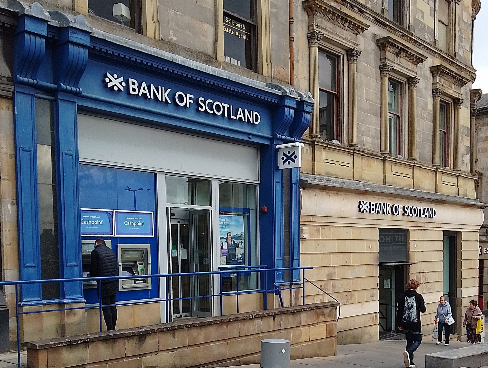

Overview
Scotland is one of the four constituent countries of the United Kingdom. It shares a land border with England to the south and is surrounded by the Atlantic Ocean, the North Sea, and the Irish Sea. Scotland includes the mainland as well as many islands, including the Hebrides, Orkney, and Shetland.
The country has a distinct cultural and historical identity, with institutions and traditions that have developed over centuries. It is internationally recognised for its universities, festivals, sporting heritage, traditional dress, and contributions to philosophy, engineering, medicine, and literature.
Government
Scotland has a devolved parliament and government with powers over key domestic matters.
Education
Its education system is separate from that of the rest of the UK and includes world-known universities.
Identity
Scottish identity is expressed through language, symbols, arts, sport, and community traditions.
History
Scotland's history includes ancient settlements, Celtic influence, Norse connections, medieval kingdoms, and political unions that shaped its development. The Kingdom of Scotland emerged during the early Middle Ages and remained an independent state until the political union with England in 1707.
Over the centuries, Scotland played a major role in the European Enlightenment and the Industrial Revolution. Scottish thinkers, inventors, and writers helped shape modern science, economics, philosophy, and literature. Historic events such as the Wars of Independence and the Jacobite uprisings remain central to national memory.
Geography
Scotland is famous for its varied and dramatic geography. The Highlands are known for mountains, glens, and lochs, while the Lowlands contain many of the country's major population centres. Its coastline is deeply indented, and its islands contribute to an especially diverse natural environment.
The climate is generally temperate and oceanic, though conditions vary widely between regions. Scotland's landscapes attract millions of visitors each year and have inspired painters, filmmakers, and writers for generations.
Culture
Scottish culture includes music, poetry, storytelling, dance, dress, cuisine, and annual celebrations. The kilt, tartan, and bagpipes are among the most recognised symbols of Scotland, though modern Scottish culture is also highly urban, creative, and globally connected.
Scotland has produced major literary figures such as Robert Burns, Sir Walter Scott, and Arthur Conan Doyle. Festivals such as the Edinburgh Festival Fringe have made Scotland one of the world's major cultural destinations. Football, rugby, golf, and Highland games also hold important places in public life.
Economy
Scotland's economy is diverse and includes energy, finance, tourism, food and drink, education, life sciences, creative industries, and technology. North Sea oil and gas have historically played a major role, while renewable energy has become increasingly significant in recent years.
Tourism remains a major economic sector, supported by Scotland's natural landscapes, heritage sites, events, and cultural reputation. Cities such as Edinburgh and Glasgow also contribute strongly through finance, services, innovation, and higher education.


